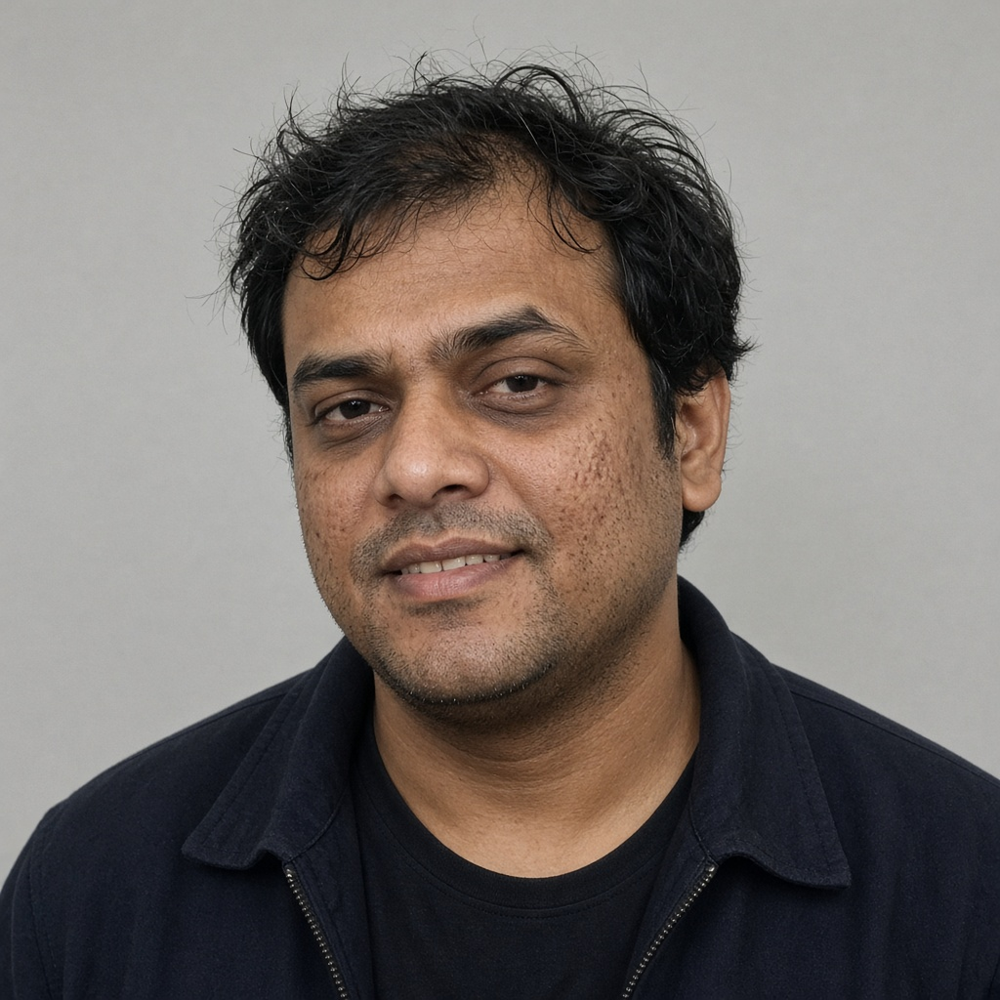

Saraj Krishna Singh
Platform Engineer
sarajkrishnasingh@gmail.com · sarajkrishnasingh.github.io · GitHub · X · Bluesky · Instagram · YouTube · Reddit
“Infrastructure should empower developers, not block them.”
Summary
Platform engineer with twelve years of experience designing, scaling, and securing cloud-native infrastructure. Currently in a Center of Excellence at Tata Consultancy Services, I build Internal Developer Platforms that hide cluster complexity behind paved roads: self-service workflows, custom Go controllers, and multi-tenant Kubernetes with enforceable RBAC. Previously an engineer on the OpenShift Observability team at Red Hat, and an active contributor to CNCF projects including Meshery.
Experience
Platform Engineer, Center of Excellence
Tata Consultancy Services · January 2023 – Present
Previously based in London
- Lead design and delivery of an Internal Developer Platform on multi-tenant Kubernetes, giving application teams self-service paths to deploy, observe, and debug — and cutting environment lead time from weeks to hours.
- Write and operate custom Go controllers and admission webhooks for tenant isolation, quota enforcement, and golden-path service scaffolding.
- Architect organization-wide access and policy (Kubernetes RBAC, OPA/Gatekeeper) so product teams can share clusters without sharing blast radius.
- Partner with design and developer-experience teams on a unified internal tooling UI, reducing the number of portals a team has to touch to ship a service.
- Mentor engineers moving from traditional IT operations into platform engineering, running enablement on GitOps, Kubernetes, and production ownership.
Software Engineer, OpenShift Observability
Red Hat · Bengaluru · June 2019 – December 2022
- Built and extended the OpenShift monitoring stack (Prometheus, Alertmanager, Grafana) for large multi-cluster estates, including recording rules and dashboards for cluster resource usage, etcd, and operator health.
- Drove OpenTelemetry instrumentation across in-cluster components so traces, metrics, and logs could be correlated in a single workflow.
- Packaged and maintained Helm charts and Operators for observability add-ons used by internal teams and the broader OpenShift community.
- Worked in the open with Kubernetes and Prometheus contributors to diagnose and fix observability issues in production Kubernetes environments.
- Ran internal enablement sessions on Prometheus and alerting practice for OpenShift field and support teams.
Cloud Infrastructure Engineer
ThoughtWorks · Bengaluru · January 2017 – May 2019
- Helped client teams adopt Docker and Kubernetes for production workloads, with a focus on CI/CD, environment parity, and operable defaults.
- Implemented Terraform and pipeline-as-code (Jenkins, GitLab CI) to provision AWS and GCP foundations and keep changes reviewable.
- Introduced Prometheus and Grafana-based monitoring and on-call practice on accounts that previously relied on host-level checks alone.
- Facilitated knowledge transfer so client platform groups could own the clusters after the engagement.
Software Engineer
Dell Technologies · Bengaluru · July 2014 – December 2016
- Developed backend services and systems automation in Python and Java for internal enterprise platforms, with an emphasis on reliability and operability.
- Built Linux packaging, deployment, and integration-test tooling that moved several services off manual release checklists.
- Prototyped container-based developer environments with Docker in 2015–2016 to shrink onboarding time for new engineers.
Open Source
Contributor, Layer5 — Meshery (CNCF)
2020 – Present
- Contribute to Meshery, the CNCF cloud native management plane, with work on Kubernetes lifecycle, adapters, and performance-management workflows.
- Improve RBAC, multi-tenancy, and API consistency so Meshery can be operated safely in shared environments.
- Review community pull requests and help new contributors get started.
Contributor, Cloud Native Computing Foundation
2019 – Present
- Contributions to Kubernetes, including controller test coverage and documentation for new contributors through SIG Docs and SIG Contributor Experience.
- Maintain Helm charts for deploying Prometheus and Grafana observability stacks.
- Bug fixes and CI reliability work with the Linkerd community.
Education
Indian Institute of Science (IISc), Bangalore
Bachelor of Science (Research) in Computer Science · Graduated June 2014 · CGPA 9.1 / 10
Relevant coursework: Data Structures and Algorithms, Operating Systems, Distributed Systems, Cloud Computing, Software Engineering, Computer Networks, Database Systems, Parallel and High Performance Computing.
Awarded the IISc Academic Excellence Scholarship (2012–2014).
Skills
| Languages | Go, Python, Java, C++, JavaScript, Bash |
|---|---|
| Cloud & platform | Kubernetes, OpenShift, Docker, Helm, AWS (EC2, EKS, S3, Lambda), Google Cloud |
| GitOps & IaC | Terraform, Argo CD, GitHub Actions, Jenkins |
| Observability | Prometheus, Grafana, OpenTelemetry, Alertmanager |
| Security | Kubernetes RBAC, OPA/Gatekeeper, multi-tenant isolation |
| Datastores | PostgreSQL, Redis, MongoDB |
| Systems | Linux, REST APIs, GraphQL, Git |
Selected Projects
Internal Developer Platform
Tata Consultancy Services · 2023–Present
Multi-tenant Kubernetes platform with Go controllers, policy-as-code, and self-service developer workflows for environment provisioning and deployment.
Meshery contributions
Layer5 / CNCF · 2020–Present
Ongoing work on cloud native management, Kubernetes integration, and safer multi-tenant operation of Meshery.
Kubernetes observability stacks
2019–2022
Helm-packaged Prometheus, Grafana, and OpenTelemetry tooling used to monitor OpenShift and upstream Kubernetes clusters, including a real-time cluster dashboard later adopted by peer teams.
Speaking and Community
- Speaker, Kubernetes Community Days Bengaluru 2025 — “Building Production-Ready Observability Stacks on Kubernetes”
- Mentor, Google Summer of Code (CNCF), 2022 and 2023
- Mentor, GirlScript Summer of Code, 2023
- Contributor to multiple CNCF and Linux Foundation projects